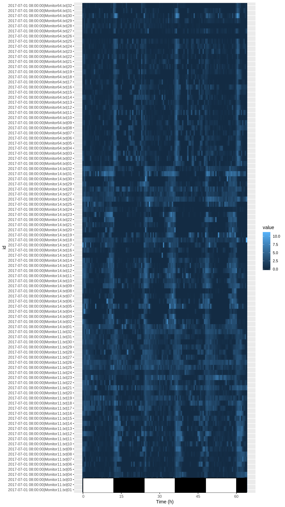

DAM2 data, in practice
A matter of metadata
A DAM experiment. Two replicates, 3 days of recording each; 10 days apart; three genotypes; two sexes, males and females
Aims
In this practical chapter, we will use a real experiment to learn how to:
- Translate your experiment design into a metadata file
- Use this metadata file to load some data
- Set the zeitgeber reference (ZT0)
- Assess graphically the quality of the data
- Use good practices to exclude individuals from our experiments
Prerequisites
- You are familiar with the TriKineticks DAM system
- Ensure you have read about the rethomics workflow and metadata
- Ensure you have installed
behavr,damrandggethopackages:
library(devtools)
install_github("rethomics/behavr")
install_github("rethomics/damr")
install_github("rethomics/ggetho")Background
Drosophila Activity Monitors (DAMs) are a wildely used tool to monitor activity of fruit flies over several days. I am assuming that, if you are reading this tutorial, you are already familiar with the system, but I will make a couple of points clear before we start something more hands-on:
- This tutorial is about single beam DAM2 but will adapt very well to multibeam DAM5.
- We work with the raw data (the data from each monitor is in one single file, and all the monitor files are in the same folder)
Getting the data
For this tutorial, you need to download some DAM2 data that we have made available. This is just a zip archive containing four files. Download and extract the files from the zip into a folder of your choice. Store the path in a variable. For instance, adapt something like:
DATA_DIR <- "C:/Where/My/Zip/Has/been/extractedCheck that all four files live there:
list.files(DATA_DIR, pattern= "*.txt|*.csv")## [1] "metadata.csv" "Monitor11.txt" "Monitor14.txt" "Monitor64.txt"For this exercise, we will work with the data and metadata in the same place. However, in practice, I recommend to:
- Have all raw data from your acquisition platform in the same place (possibly shared with others or a network drive)
- Have one folder per “experiment”. That is a folder that contains one metadata file, your R scripts, your figures regarding a set of consistent experiment.
For now, we can just set our working directory to DATA_DIR:
setwd(DATA_DIR)From experiment design to metadata
Our toy experiment
A DAM experiment. Two replicates, 3 days of recording each; 10 days apart; three genotypes; two sexes, males and females
In this example data, we were interested in comparing the behaviour of populations of fruit flies, according to their sex and genotype. We designed the experiment as shown is the figure above. In summary, we have:
- three genotypes (A, B and C)
- two sexes (male and female)
- two replicates (
2017-07-01 -> 2017-07-04and2017-07-11 -> 2017-07-14) - Altogether, 192 individuals
Metadata
It is crucial that you have read metadata chapter to understand this part. Our goal is to encode our whole experiment in a single file in which:
- each row is an individual
- each column is a metavariable
Luckily for you, I have already put this file together for you as metadata.csv! Lets have a look at it (you can use R, excel or whatever you want). If you are using R, type this commands:
library(damr)
metadata <- fread("metadata.csv")
metadata## file start_datetime stop_datetime region_id sex
## 1: Monitor11.txt 2017-07-01 08:00:00 2017-07-04 1 M
## 2: Monitor11.txt 2017-07-01 08:00:00 2017-07-04 2 M
## 3: Monitor11.txt 2017-07-01 08:00:00 2017-07-04 3 M
## 4: Monitor11.txt 2017-07-01 08:00:00 2017-07-04 4 M
## 5: Monitor11.txt 2017-07-01 08:00:00 2017-07-04 5 M
## ---
## 188: Monitor64.txt 2017-07-11 08:00:00 2017-07-14 28 F
## 189: Monitor64.txt 2017-07-11 08:00:00 2017-07-14 29 F
## 190: Monitor64.txt 2017-07-11 08:00:00 2017-07-14 30 F
## 191: Monitor64.txt 2017-07-11 08:00:00 2017-07-14 31 F
## 192: Monitor64.txt 2017-07-11 08:00:00 2017-07-14 32 F
## genotype replicate
## 1: A 1
## 2: A 1
## 3: A 1
## 4: A 1
## 5: A 1
## ---
## 188: C 2
## 189: C 2
## 190: C 2
## 191: C 2
## 192: C 2Each of the 192 animals (rows) is defined by a set of mandatory columns (metavariables):
file– the data file (monitor) that it has been recorded instart_datetime– the date and time (YYYY-MM-DD HH:MM:SS) of the start of the experiment. Time will be considered ZT0, see notestop_datetime– the last time point of the experiment (time is optional)region_id– the channel ([1, 32])
For our experiment, we also defined custom columns:
sex– M and F for male and female, respectivelygenotype– A, B or C (I just made up the names for the sake of simplicity)replicate– so we can analyse how replicates differ from one another
Note that this format is very flexible and explicit. For instance, if we decided to do a third replicate, we would just need to add new rows. We could also add any condition we want as a new column (e.g. treatment, temperature, matting status and so on)
Linking
Linking is the one necessary step before loading the data. It allocates a unique identifier to each animal.
It is very simple to link metadata:
metadata <- link_dam_metadata(metadata, result_dir = DATA_DIR)
metadataAs result_dir, we just use the directory where the data lives, which you decided when you extracted your data (DATA_DIR).
Importantly, you do not need to cut the relevant parts of your DAM files (this is an error-prone step that should be avoided). In other words, no need to use the DAMFileScan utility or manipulate in any way the original data.
You can keep all the data in one file per monitor. rethomics will use start and stop datetime to find the appropriate part directly from your metadata.
Loading
In order to work with the data the last step is to load it into a behavr structure. To do that simply use load_dam function (as shown below). This function will store all data in dt (or any other given name)
dt <- load_dam(metadata)
summary(dt)## behavr table with:
## 192 individuals
## 8 metavariables
## 2 variables
## 7.37472e+05 measurements
## 1 key (id)That is it, all our data is loaded in dt.
Note on datetime
ZT0
In the circadian and sleep field, we need to align our data to a reference time of the day. Typically, when the light (would) turn on (ZT0). In damr, the time part of the start_datetime is used as a circadian reference. For instance, if you specify, in your metadata file 2017-01-01 09:00:00, you imply that ZT0 is at 09:00:00. The time is looked-up in the DAM file, so it will be at on same time zone settings as the computer that recorded the data.
Start and stop time
When fetching some data, date and time are always inclusive.
When only the date is specified:
- start time will be at
00:00:00 - stop time will be at
23:59:59
For instance, start_date = 2017-01-01 and stop_date = 2017-01-01 retrieves all the data from the first of January 2017.
Quality control
Detecting anomalies
Immediatly after loading your data, it is a good idea to visualise it, in order to detect anomalies or at least to be sure that everything looks ok. We can use ggetho for that, for example the following code will create an activity tile plot, useful to detect dead animals.
library(ggetho)## Loading required package: ggplot2# I only show fisrt replicate
ggetho(dt[xmv(replicate) == 1 ], aes(z=activity)) +
stat_tile_etho() +
stat_ld_annotations()
Here, instead of ploting everything, I show how you can subset data according to metadata in order to display only replicate one (dt[xmv(replicate) == 1]). In practice, you could also plot everything. You can do a lot more with ggetho (see the visualisation chapter)
What does this tile plot tell us? Each row is an animal (and is labelled with its corresponding id). Each column is a 30min window. The colour intensity indicates the activity.
There are two things that we can immediatly notice:
- For most animals, the activity is rhythmic and synchronised with the light phase transisitions.
- Some animals are dead or missing. For instance take a look at
channel 26inMonitor64.txt.
In other chapters, we will learn how to group individuals, visualise and compute statistics.
How to exclude animals?
We suggest to exclude animals a priori (e.g. because they died) by recording them as dead in the metadata. This way data is not modified or omited and can easily be recovered if needed. For instance, you can add a column status in your metadata file and put a default value such as "OK". If an animal is to be removed, you can replace "OK" by a reason (e.g. "dead", "escaped", …). Then, you can load your data without those animals load_dam_data(metadata[status == "OK"], ...). This practice has the advantage of making it very transparent, why some individuals where excluded. Also, as stated before, it can easily be reversed.
Apply functions when loading
Finaly, we may want to apply a function on the data as it is loaded, in order to preprocess it, saving time. This pre-processing will annotate the data, i.e create new information (new columns) based on the original data. As an example, we can perform a sleep (bouts of immobility of 5 min or more), from our sleepr package (which you will have installed).
library(sleepr)
dt <- load_dam(metadata, FUN = sleepr::sleep_dam_annotation)
dt##
## ==== METADATA ====
##
## id file_info region_id
## <fctr> <list> <int>
## 1: 2017-07-01 08:00:00|Monitor11.txt|01 <list> 1
## 2: 2017-07-01 08:00:00|Monitor11.txt|02 <list> 2
## 3: 2017-07-01 08:00:00|Monitor11.txt|03 <list> 3
## 4: 2017-07-01 08:00:00|Monitor11.txt|04 <list> 4
## 5: 2017-07-01 08:00:00|Monitor11.txt|05 <list> 5
## ---
## 188: 2017-07-11 08:00:00|Monitor64.txt|28 <list> 28
## 189: 2017-07-11 08:00:00|Monitor64.txt|29 <list> 29
## 190: 2017-07-11 08:00:00|Monitor64.txt|30 <list> 30
## 191: 2017-07-11 08:00:00|Monitor64.txt|31 <list> 31
## 192: 2017-07-11 08:00:00|Monitor64.txt|32 <list> 32
## experiment_id start_datetime stop_datetime
## <char> <POSc> <char>
## 1: 2017-07-01 08:00:00|Monitor11.txt 2017-07-01 08:00:00 2017-07-04
## 2: 2017-07-01 08:00:00|Monitor11.txt 2017-07-01 08:00:00 2017-07-04
## 3: 2017-07-01 08:00:00|Monitor11.txt 2017-07-01 08:00:00 2017-07-04
## 4: 2017-07-01 08:00:00|Monitor11.txt 2017-07-01 08:00:00 2017-07-04
## 5: 2017-07-01 08:00:00|Monitor11.txt 2017-07-01 08:00:00 2017-07-04
## ---
## 188: 2017-07-11 08:00:00|Monitor64.txt 2017-07-11 08:00:00 2017-07-14
## 189: 2017-07-11 08:00:00|Monitor64.txt 2017-07-11 08:00:00 2017-07-14
## 190: 2017-07-11 08:00:00|Monitor64.txt 2017-07-11 08:00:00 2017-07-14
## 191: 2017-07-11 08:00:00|Monitor64.txt 2017-07-11 08:00:00 2017-07-14
## 192: 2017-07-11 08:00:00|Monitor64.txt 2017-07-11 08:00:00 2017-07-14
## sex genotype replicate
## <char> <char> <int>
## 1: M A 1
## 2: M A 1
## 3: M A 1
## 4: M A 1
## 5: M A 1
## ---
## 188: F C 2
## 189: F C 2
## 190: F C 2
## 191: F C 2
## 192: F C 2
##
## ====== DATA ======
##
## id t activity moving asleep
## <fctr> <num> <int> <lgcl> <lgcl>
## 1: 2017-07-01 08:00:00|Monitor11.txt|01 0 0 FALSE TRUE
## 2: 2017-07-01 08:00:00|Monitor11.txt|01 60 0 FALSE TRUE
## 3: 2017-07-01 08:00:00|Monitor11.txt|01 120 0 FALSE TRUE
## 4: 2017-07-01 08:00:00|Monitor11.txt|01 180 0 FALSE TRUE
## 5: 2017-07-01 08:00:00|Monitor11.txt|01 240 0 FALSE TRUE
## ---
## 737468: 2017-07-11 08:00:00|Monitor64.txt|32 230160 0 FALSE TRUE
## 737469: 2017-07-11 08:00:00|Monitor64.txt|32 230220 0 FALSE TRUE
## 737470: 2017-07-11 08:00:00|Monitor64.txt|32 230280 0 FALSE TRUE
## 737471: 2017-07-11 08:00:00|Monitor64.txt|32 230340 0 FALSE TRUE
## 737472: 2017-07-11 08:00:00|Monitor64.txt|32 230400 0 FALSE TRUEAs you can see, we now have additional columns in the data.